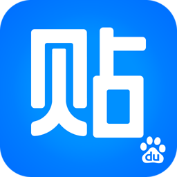

痛新闻
成立日期：
2013年3月9日成员组成：
制作组固定成员7名 （有时间来帮忙的流动人员10名左右）节目宗旨：
以5~20分钟的网络视频的形式，每天对日本各地举办的最受关注的动漫、游戏活动进行现场报道。同时不定期制作 《圣地巡礼》 系列专题，动漫业内名人访谈等，致力于打造面向中国动漫爱好者的内容最丰富最有趣的综艺节目。
组织推广：
痛新闻官网微博；  痛新闻吧； 痛新闻公共微信平台参见右上角二维码；加入我们：
痛新闻大家族随时欢迎热爱二次元的小伙伴加入，富有才华的你请带上简历联系我们吧~成员介绍
主要成员
网站编辑
软软冰 痛新闻网站创始人,节目主持人 因为喜欢动漫而去日本留学，在早稻田大学学习媒体设计专业。 留学期间疯狂跑漫展和圣地巡礼，萌生了想要把这份快乐分享给国内的小伙伴的想法，并由此开始了痛新闻节目的制作。
【履历】
主持
2013年12月：土豆日本特派员名古屋拍摄
2014年3月：爱奇艺AnimeJapan嘉宾主持；
2014年9月 ：PPTV东京游戏展嘉宾主持；
2014年4月-2015年4月：土豆动漫频道在日特约记者；
2015年5月-：哔哩哔哩动画在日主持人
文章刊载
《东京流行通讯》
《游戏实用技术》
《知日.萌》
翻译陪同
NICONICO动画人气舞见【罪心组合】MELOCHIN&MIUME，【MUSUMEN】TOMITAKE&AOI，杏子，足太，猫耳双子，RAB等
NICONICO动画人气唱见【红婷婷】
声优【饭田里穗】
风铃 痛新闻摄像师,东京摄影师联盟创始人 在日留学生一个。
大学在读，机械系统学科。
摄影师（软软冰80%照片原产地）视频&照片后期
忠实佳能党一个。
目标是拯救世界，以及摄影器材减轻80%技能获得等。
请多指教。
小T酱 痛新闻网站联合创始人，架构师, 首席技术官 由于ξ世界线变动，空间扭曲成Kähler流形后而误闯入痛新闻组织，开启了另一扇世界的大门。受到该组织成员的精神干扰（误）后，感觉到了强烈的羁绊，决定与志同道合的伙伴们一起开创未来之路. El Psy Congroo.
负责痛新闻网站全方位开发，架构设计，主程序，代码，测试，运维. 希望建成一个具有独立风格的新闻与组织交流平台. 以萌为主，以技为辅。
海外党，11年ACG龄,萌系治愈控,推理治郁控. P.A, 京阿尼一生推, 香菜一生推，最爱呆唯，千反田。我很好奇！ (｡•ˇwˇ•｡). 接触过视频后期，编曲， 画画水平比小林优好(｡•ˇwˇ•｡)
【履历】
学者，喜欢发呆，思考, 脑洞， 研究图像领域: Light field (光场)， Image based rendering (基于图像渲染), Computational image （计算成像）, free-viewpoint video (自由视点视频)
软件系统开发,新技术/理念追随者,开发过各种项目: audio/ echo processing (声音/回音消除), computer vision（计算机视觉）, smart traffic control （智能交通）， data mining （数据发掘）, agile methodology(敏捷), 容器化应用等(｡OˇwˇO｡)
丧男 痛新闻摄像，搞笑艺人 因为喜欢日本文化动漫而留学日本，继而加入痛新闻，在数字好莱坞大学学习数字媒体类专业。平时是个乐天派，善于与人交流，喜欢交朋友，自己也有做一些小视频，希望大家都开心！做一个自在的人，做自在的事。欢迎来勾搭，探讨哲学~
自己的信念就是当一个好玩的人，人嘛，活着就是要开心～能给大家带来快乐,也是自己的喜好。平时没事吃吃喝喝，看看萌妹纸，看看宅舞。大老师最高！
SyuRa前辈 痛新闻摄影节目后期总监 位于浙南的三线城市温州，生活一度乏味而按部就班，一名苦逼的医学研究生，因自学过视频相关技能，在学校经营着一间小工作室。无聊又循环的日子，因二次元也显得些许生机。然而即使沉醉于AE、PR抑或AC、Bili之中，时间的洪流依旧涌动，在被卷入名为人生的漩涡之前，于魔都的Nova Dance Party中遇到了软软冰一行，于是命运的齿轮开始转动。
丘丘 画师 双马尾星球地球在住居民，喜欢可爱的小妹妹，可爱的小裙子，画一些可爱的小姑娘。目标是成为可以统治宇宙的职业漫画家叽叽叽请多多指教！
很普通的人 痛新闻后勤,摄影,后期 因为看了初音的演唱会决定来日本留学。留学期间加入了痛新闻。 爱游戏，爱摄影，爱后期，爱折腾。啥都会点，啥都不精，还在自己努力学习中。希望今后和大家一起做出更好的节目。
August 痛新闻网站设计师,画师 听说本体是一条画水彩的柴犬
爱吃烤肉
经常性睡眠不足
隔壁那只喵星人经常来烦我作为一只汪星人必须迅速高冷起来嗯:D
加入痛新闻这个组织感受到了大家的温暖，希望在未来继续和大家把痛新闻网站推向国外推向世界推向地球推向宇宙推向银河系......！！！（拖走